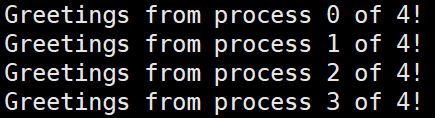

前言
分布式内存系统，顾名思义，是由多个处理器(CPU)组成，每个处理器可以位于不同的计算机上，并且都有各自私有的内存。
MPI(Message-Passing Interface)，是运行在分布式计算机系统上的并行应用程序所使用的最流行的通信协议。它不是一种新的语言，它定义了可以被C、C++和Fortran程序调用的函数库。
在消息传递程序[1]中， 运行在一个 核 - 内存 对上的程序统称为一个进程。两个进程可以通过调用函数来进行通信：一个进程调用发送函数，一个进程调用接受函数，该通信方式的实现即为MPI。
基础
¶编译执行
¶使用mpicc命令来编译程序[2]
1 | $ mpicc -g -Wall -o mpi_exec mpi_exec.c |
- mpicc是C语言编译器的wrapper script。
$：shell提示符-g：需要对程序进行gdb调试则加上该选项-Wall：产生警告信息-o：后接产生的可执行文件的名称
¶使用mpiexec命令启动程序
1 | $ mpiexec -n <number of processes> ./mpi_exec |
-n <number of processes>：告诉系统启动<number of processes >个<mpi_exec>程序的实例，进程运行后，MPI保证进程间可以相互通信。
¶基本函数
¶MPI_Init和MPI_Finalize
¶MPI_Init()
- 告知MPI系统进行所有必要的初始化设置，即并行环境初始化
1 | int MPI_Init( |
- 参数 $argc_p$ 和 $argv_p$ 是指向 $main$ 主函数的参数 $argc$ 和 $argv$ 的指针。(不使用这些参数时，设置为 $NULL$ 即可)
MPI_Init函数返回一个 $int$ 型的错误码，通常情况下我们忽略这些错误码。- 在程序调用
MPI_Init之前，不应该调用其它MPI函数。(除MPI_Initialized函数[3])
¶MPI_Finalize
- 告知MPI系统MPI已经使用完毕，为MPI分配的资源可以释放
1 | int MPI_Finalize(void); |
- 退出MPI系统，所有进程正常退出都必须调用该函数。
- 串行代码仍可在主进程上运行，但是不可以再调用任何MPI函数。
¶标准MPI程序框架
1 |
|
¶MPI_Comm_size和MPI_Comm_rank
¶通信子
- MPI中， communicator指一组可以互相发送消息的进程集合。
MPI_Init的一个初始化设置即：
在用户启动程序时，定义由用户启动的所有进程所组成的通信子，该通信子为 :MPI_COMM_WORLD。- MPI为通信子定义了一种特殊的类型：
MPI_Comm
¶MPI_Comm_size
1 | int MPI_Comm_size( |
- 获得通信子
comm中的进程数，并存在comm_sz_p中。
¶MPI_Comm_rank
1 | int MPI_Comm_size( |
- 获取正在调用的进程在通信子中的进程号，并存在
my_rank_p中。
¶MPI_Send和MPI_Recv
¶SPMD程序
通常来说，MPI程序会运行多个进程。为了实现并行程序，我们会编写单个MPI程序，让不同进程产生不同的动作。让进程按照它们的进程号来匹配程序分支，该方法称为单程序多数据流(Simple Program Multiple Data)。
- 下面的程序即通过使用 if-else 语句实现SPMD。
1 | // file_name: hello.c |
- 编译运行
1 | mpicc -g -Wall -o hello hello.c |
- 运行结果

¶通信
在上述程序中，我们可以发现除了0号进程外，其余的进程都使用sprintf函数生成了一条要发送给0号进程的消息，并使用MPI_Send将消息发送给0号进程。同时，0号进程也使用MPI_Recv接受消息，并用printf函数将消息打印出。
0号进程使用for循环依次接受来自1~comm_sz-1 号进程发送来的消息。
¶MPI_Send
- 进程间发送消息
1 | int MPI_Send( |
参数解析
msg_buf_p：指向包含发送消息内容的内存块的指针
msg_size：发送的消息的个数
msg_type：发送消息的数据类型
dest：目的进程号
tag：消息标签，接受方需要有相同标签才能接受消息
communicator：通信子，表示在该通信组内传输消息
- 由于C语言中的数据类型不能作为参数传递给函数，MPI定义了一个特殊的类型：MPI_Datatype，用于参数msg_type。
msg_size和msh_type指定了发送的数据量，对于MPI_CHAR，因为C语言中字符串结束符为'\0'，所以msg_size为strlen(greeting)+1。
¶MPI_Recv
- 接受消息
1 | int MPI_Recv( |
参数解析
msg_buf_p：指向接受信息的内存块
msg_size：指定内存中要存储对象的个数
msg_type：待存储对象的类型
source：接收的消息的源进程号
tag：消息标签，和发送方的tag值相同时才能接受该消息
communicator：通信子，表示在该通信组内传输消息
status_p：消息状态。接受函数返回后，将在这个参数指示的变量中存储实际接受消息的状态，包括MPI_SOURCE、MPI_TAG、MPI_ERROR
- 接受到的数据量可以通过函数
MPI_Get_count得到
1 | int MPI_Get_count( |
¶关于MPI_Send和MPI_Recv
- 在
MPI_Send发送一条消息后，该消息会被放入到缓冲区中，此时系统会出现阻塞，只有当缓冲区可以重新使用时，才会返回MPI_Send的调用。 当消息被发送至匹配的接受缓冲区或者被拷贝至一个中间系统缓冲区时，发送数据的缓冲区会被释放。 - 对于
MPI_Recv，在接受消息的时候，系统会产生阻塞，直到接受到一条匹配的消息。 如果一个进程试图接受消息，但是没有匹配的消息，那么进程就会被永远阻塞在那里，即进程悬挂。 - MPI要求消息是不可超越的。进程发送多条消息给其它进程时，要确保发送消息的现后顺序，只有当前消息发送成功后才能继续发送下一消息。
- 如果
MPI_Send发生阻塞，且没有相匹配的接受，那么发送进程会悬挂起来；若被缓冲，但没有匹配的接受，那么消息将丢失。
¶补充
¶MPI_Datatype
| MPI Datatype | C Datatype |
|---|---|
| MPI_CHAR | signed char |
| MPI_SHORT | signed short int |
| MPI_INT | signed int |
| MPI_LONG | signed long int |
| MPI_LONG_LONG | signed long long int |
| MPI_UNSIGNED_CHAR | unsigned char |
| MPI_UNSIGNED_SHORT | unsigned short int |
| MPI_UNSIGNED | unsigned int |
| MPI_UNSIGNED_LONG | unsigned long int |
| MPI_FLOAT | float |
| MPI_DOUBLE | double |
| MPI_LONG_DOUBLE | long double |
| MPI_BYTE | |
| MPI_PACKED |